生成时间：2026-10-02T11:36:40+08:00
今日保留论文数：14
内容构成：今日新文 14 篇；补充推荐 1 篇；经典旧文精读 0 篇
阅读分层：重点精读 2 篇；相关简报 13 篇。精读依据科学贡献筛选，简报保留方法、结论及局限。
补充推荐论文数：1
数据源警告
- 本次有 1 个数据源访问异常；完整错误已保留在运行日志中，日报只显示摘要。
- 其他来源：1 个异常。
- 主要错误类型：其他 1 次。
高能天体物理重点
1. High-energy neutrinos from shocked circumnuclear material around optically-bright and infrared-only tidal disruption events
- 来源：arXiv / astro-ph.HE
- 链接：https://arxiv.org/abs/2610.00965
- 作者：Mainak Mukhopadhyay, Shigeo S. Kimura, Tatsuya Matsumoto
- 公告 / 来源日期：2026-10-02
- 阅读层级：重点精读
- 评分：novelty 8/10，importance 8/10，relevance 10/10，final 9.70/10
- 推荐理由：将IR遮蔽TDE辐射压缩、宇宙线输运与总体中微子叠加预测相连，对未来搜索窗口给具体约束；10%贡献强依赖模型和率。
中文题目：遮蔽潮汐瓦解事件：冷却压缩能否提高外流激波的中微子产额？
做了什么：恒星被超大质量黑洞潮汐瓦解后，亚相对论外流会扫过核周气体。本文比较光学明亮与仅红外可见两类事件，联立扫掠减速、气体自由—自由冷却、质子加速与逃逸，计算质子碰撞产生的全味中微子。密集环境既增加碰撞靶，也使激波更早减速；冷却后的高密薄壳可趋于量热状态，但最高粒子能量随之下降。
在固定外流质量0.5太阳质量、初速0.1倍光速及红外类环境密度每立方厘米百万粒子的基准下，两类种群合计在100 TeV贡献约1%或5%的观测弥散强度，取决于红移演化；约10%是计入率不确定性后的乐观情景。未来约30立方公里水下探测器的十年叠加预报可在近邻、多年时间窗达到约3σ；这不是已观测关联，也不是按真实HUNT响应完成的发现灵敏度标定。
为什么重要：它把容易混淆的两件事分开：气体冷却使碰撞更高效，却未必让高能中微子更多，因为可加速到的最高能量和激波供能同时衰减。对光学TDE的弱贡献与红外遮蔽样本的较高潜力，来自这条动力学与粒子链，而不是把红外亮度直接换成中微子流量。结果提供一个可以被射电密度、外流能量和总体叠加共同检验的具体模型。
理论 / 观测 / 仪器方法价值：可借鉴的是分开使用加速区密度与冷却靶密度，并将粒子停留、碰撞和同步损失以竞争时标合并，再折叠探测有效面积。搜索设计必须同时调整源表深度和持续时间，不能默认样本越远或时间越长越好。移植到其他瞬变前，需要重新测量外流及环境，核查宇宙线是否真的被困在冷却薄壳。
为什么应该关注：这直接关联IceCube、KM3NeT及未来水下中微子阵列的电磁触发搜索。应关注红外TDE近邻样本的完备性、尘埃柱密度与局部气体密度的区别，以及信号能谱随事件年龄变化；不应把光学样本的低效率外推到所有遮蔽事件，也不能以本文理想化的3σ等值线替代实际数据分析的全局显著性。
展开详细解读：文章讲解、背景、理论、重点章节、图表与相关工作
文章详细讲解
科学问题
非喷流TDE的射电外流确实能撞击核周介质，但它们是否能提供可观的高能中微子尚不清楚。光学样本与红外尘埃回声样本可能处于不同环境；核心问题是密度提高能否克服单源产额低的问题，并留下适合总体叠加检验的信号。本文并不解释已有某个中微子与TDE的唯一对应。
作者怎么做
作者为两类事件采用相同外流能量，以陡降内层加常数外层构成核周密度。先以能量守恒求扫掠减速，在自由—自由冷却快于动力学时转为动量守恒薄壳；再在即时激波处加速质子，把下游等压冷却后的压缩气体作为碰撞靶。最高能量由加速、逃逸、碰撞、同步损失及热层存续时间共同决定，然后计算单源能谱、宇宙学积分与目录叠加。
关键结果
光学基准一直偏向碰撞薄靶；红外基准在晚期可使质子几乎把能量转入碰撞产物，但此时最高质子能量快速下降。100 TeV全味强度中，红外类中心预言为每平方厘米每秒每球面度4.3×10⁻¹⁰或2.6×10⁻⁹ GeV，分别对应负演化与跟随恒星形成率的演化。约1%与5%的贡献需要与IceCube每味测量乘三后比较。
局限和下一步
百万密度不是红外观测唯一测出的环境，冷却壳也未被多区流体和宇宙线输运自洽解析。中性阻尼、薄壳不稳定和粒子渗透不足均可压低高能端。下一步应联合射电和红外限制几何及密度，用真实探测器响应、目录选择函数与时间窗扫描标定搜索，而不是先把乐观模型当标准烛光。
关键结果是怎么做出来的
第一步是控制比较条件。两类模型共享内层斜率2.5、特征半径10¹⁷厘米及0.5太阳质量、0.1c的球对称外流；不同的是外层密度100与10⁶每立方厘米。因此结果展示的是环境作用，不是对两类真实事件分布的总体拟合。积分从10⁶秒开始，不宣称已模拟最靠近黑洞的早期耗散。
第二步比较扫掠质量与抛射质量。稠密环境使扫掠质量更早达到0.5太阳质量，前向激波提前减速。图3—5把质量、半径速度和冷却时标顺序相连；完整数值动力学给红外基准的辐射转变约9.8年，解析Sedov标度只用于解释参数依赖，不能替代数值归一化。
第三步区分热气体与高能质子。自由—自由冷却消耗的是热气体能量；它作为加速上限，是因为热层的寿命与厚度缩短，不是因为相对论质子通过自由—自由过程直接冷却。加速处仍取四倍上游密度，而碰撞靶可以使用远下游冷却后的更大密度。
第四步检查效率饱和与截止。图7在瞬时最高质子能量处评价碰撞效率；它趋近1时，不能继续把密度提高解释成线性增加的转换效率。供能和最高能量转而控制中微子光度。辐射期近常密度环境中，最高能量可按时间的负三次方下降，故晚期仍有低能产额，却不再贡献同样多的超高能事件。
第五步从单源走到种群与仪器。弥散计算把每个事件积分到约320年，并考虑两种红移演化；十年探测预测则使用每个源有限的观测者时间窗，源时要除以1加红移。HUNT采用KM3NeT有效面积的体积幂次缩放及0.1度角误差，其他阵列在所试参数域内未达3σ。这些假设和目录覆盖共同决定图11，不能直接用于发布某次观测的显著性。
展开背景、理论、公式、模型和章节导读
背景知识
潮汐瓦解事件发生于恒星进入黑洞潮汐力足以超过自身引力的区域。部分碎片被抛出，部分返回并供给吸积，可能驱动非相对论或亚相对论风。射电同步辐射通常追踪外流与环境作用，因而给外流能量、半径和密度提供间接线索；这些反演仍依赖电子加速与能量分配。
仅红外可见描述的是发现波段和遮蔽性质，而不是一种已被唯一确定的发动机。尘埃把光学紫外能量重新辐射成红外，回声时标约束尘埃尺度；没有光学对应体主要说明视线消光强。它不能单独给出激波所在位置的三维气体密度，更不能证明每个红外瞬变都具有相同强外流。
高能中微子可由质子与气体的非弹性碰撞产生，带电介子衰变把部分能量传给中微子。另一条路径是质子与光子的相互作用，两者需要不同靶与阈值。本文研究的是较大半径的气体靶；红外回声的存在只是环境线索，不意味着中微子必定以红外光子为靶或跟随红外光变。
量热源指粒子在逃逸前有效耗掉能量，并非百分之百能量进入中微子。介子分配、其他损失及味混合仍需计算。单源预期事件很少时可以叠加已知位置和时间的源，但背景随窗口和源数增长；这解释了为何需要把物理时间演化与统计搜索一起设计。
基础理论 / 方法脉络
动力学从能量与动量分账开始。慢冷却阶段，扫掠更多静止气体使同一能量由更多质量承载，速度下降。若环境近常密度，质量随半径三次方增加，能量守恒推出半径按时间的2/5次方增长。这个Sedov型极限只是外部控制标度，实际计算仍含抛射质量和非均匀内层。
强激波把上游动能变成热能，即时压缩约为4，温度随速度平方变化。自由—自由辐射率随密度平方增大，因而稠密介质更易失去热压。作者在冷却转变后直接匹配动量守恒，忽略中间压力驱动阶段；等压冷却到10⁴ K进一步压缩气体，但磁压、非热压与混合可能阻止达到这一理想上限。
扩散激波加速要求磁扰动把粒子反复散射穿越激波。作者取Bohm扩散及固定磁能份额，得到随粒子能量增长的加速时间；逃逸与损失则终止增长。部分电离环境中的离子—中性阻尼可能破坏这个散射条件，故高密度既是有利靶，也可能削弱加速器。
准稳态粒子数近似为注入率乘有效停留时间，碰撞、逃逸和同步损失的倒时标相加。它把复杂输运压缩成单区竞争；假设质子能进入最密冷却层，并沿用加速区的有效逃逸时间，尚没有解析粒子空间分布。任何改进此项的输运计算，都可能比单独细化弥散红移积分更影响产额。
公式与推导
以下沿原文方程(1)、(3)—(7)、(13)—(24)、(26)—(33)整理；最后的事件数是对文中响应折叠的教学写法，不是新拟合。各局域量均在源系，能量须使用一致单位。
- 给定环境即可积分扫掠质量：
其中密度单位为cm⁻³、半径为cm、质量为g，要求k小于3。质量表达式连接密度与减速；它不证明内层幂律可外推至任意小半径。
- 慢冷却能量近似给速度：
初始能量约4.5×10⁵¹ erg。扫掠质量大且环境常密度时，速度随R的负3/2次方变化，积分得R正比t的2/5次方，供后续时标估计。
- 即时强激波温度与自由—自由冷却时间为：
原文取μ=0.6及电子、质子密度均约4n。辐射率随温度平方根和密度平方增长，所以t_ff随v/n变化；与动力学时标相交定义转变，不是质子冷却时标。
- 转变后的匹配与压缩：
P_crit由转变点连续确定。常密度大扫掠质量极限得R正比t的1/4次方；n_cool是等压冷却的有效上限靶，不用于即时加速区损失。
- 激波向粒子提供功率，并设定磁场：
磁能份额ε_B=0.01，B用高斯单位。功率单位erg/s；即使碰撞效率已经很高，下降的供能也会压低信号。
- 加速上限由最快的终止过程给出：
η=20/3对应所取Bohm近似，\(t_pp\),acc用4n。冷却受限时E_p,max随v⁴n⁻¹/²变化；配合辐射期v正比t⁻³/⁴，推出常密度下t⁻³的截止下降。
- 下游相互作用密度进入另一时标：
原文取截面3×10⁻²⁶ cm²和非弹性度0.5。辐射后靶可取n_cool，所以效率增加；倒时标合并自动使f_pp不超过1，避免薄靶近似的非物理外推。
- 注入归一化与全味中微子产额闭合：
质子低能端1 GeV；1/2是近似能量分配。量热极限下停留时间等于碰撞时间，产额便主要随注入功率而非继续随密度增长。
- 单源累积与种群积分使用不同时间：
第一式沿原文近邻单源近似，第二式使用源系事件率及能谱；必须配套红移约定，不能重复加时间膨胀因子。弥散谱的每球面度强度与单源面通量也不能直接相加。
- 真正探测的量是响应加权事件数：
味混合后须用适配缪中微子的分量；面积cm²乘积分流量得到无量纲计数。第二式是原文式(37)的窗口重叠尺度，而非硬性源数上限。背景、响应和扫描试验还要进入真实似然。
模型拟合 / 应用方法
本文没有对某个TDE做观测后验拟合，而是固定基准参数的前向计算。输入包括外流质量与速度、核周密度形状、宇宙线和磁能份额、粒子谱形以及种群率。光学亮度选择不决定外流动能，两类使用相同能量是比较设定；不能把模型表中的数值误称为测量置信区间。
动力学先数值推进半径与扫掠质量，再从热冷却和动力学时间的交点切换壳层处方。解析早晚期标度用于解释趋势，完整解并非全流体数值模拟。读者复用时应检查切换连续性、冷却函数与热压假设、最小起始半径，尤其不能把尚未解析的高压缩层当已分辨结构。
粒子部分每一时刻求最高能量，再按有效停留时间构造准稳态分布。环境密度、能量份额和逃逸假设存在明显退化；更密的靶可以补偿较弱注入，但又更早压低截止。射电电子反演与质子含量之间没有自动一一对应，需额外处理电子注入比例和非热能量预算。
种群部分固定光学局域率约3.1×10⁻⁷ Mpc⁻³yr⁻¹，红外取其三分之一，另比较负演化与恒星形成率演化。若只有一部分事件有此类外流，弥散贡献近似乘该比例。红外目录不完备和两类身份交叠也会影响率；图9阴影或相邻曲线不是对这些全部系统误差进行联合边缘化的结果。
探测部分采用轨迹事件、100 TeV以上能量与十年曝光，冰阵列/水阵列有效面积部分按体积的2/3次方缩放。图11是特定模型和背景处方的预期统计敏感度，本文引用前作附录的叠加形式，未在此重作真实HUNT蒙特卡罗与全局扫描校准。执行搜索时需以公开或合作组响应替换缩放、加入实际目录选择和各向异性曝光，并用伪实验检验覆盖率。
重点章节 / 结果段落怎么读
-
§II.1：先核对红外消光能约束什么；柱密度不能唯一决定激波局部密度，是全部乐观预报的关键前提。
-
§II.2—II.3及图5：追踪能量守恒何时失效、怎样转向动量守恒，并区别即时激波和冷却下游。
-
§III.1及图7：逐项核查最高能量限制与效率定义，特别注意自由—自由时标代表热层存续。
-
§III.3及图9：对齐全味/每味口径、局域率与红移演化，再判断1%、5%和10%的含义。
-
§IV—V：把图11的目录深度和时间窗联系到背景增长，再阅读薄壳输运、电离度及探测响应的限制。
关键图表与解读
图7
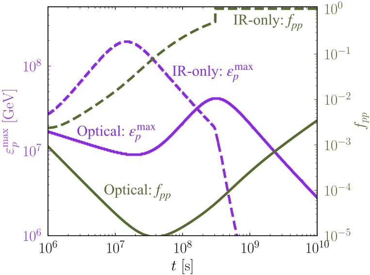
图注：最高质子能量（左轴）与有效质子—质子碰撞效率（右轴）随时间演化。实线代表光学明亮TDE，虚线代表仅红外TDE；碰撞效率在各时刻最高质子能量处计算。稠密红外环境经辐射压缩后效率接近1，但激波减速和冷却使最高能量迅速下降。
怎么看这张图：先比较效率上升与最高能量下降的时序：高靶密度并不保证长期产出最高能中微子。两条纵轴不可混读，效率是在瞬时截止能量处计算。
来源与置信度：arXiv HTML；source verified；https://arxiv.org/html/2610.00965v1/epmax_fpp.svg
图9
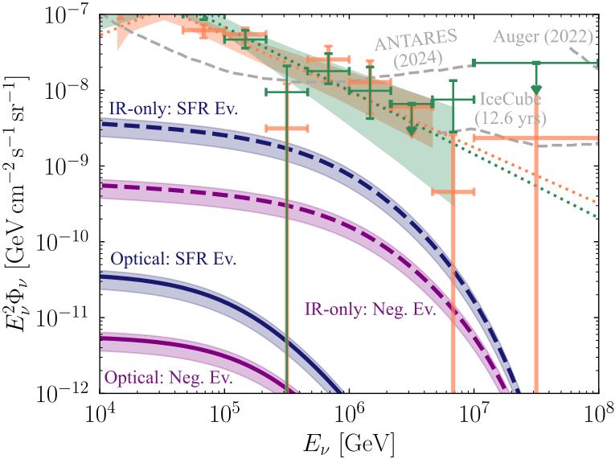
图注：TDE外流与核周介质相互作用对全天弥散中微子强度的贡献，分别给出光学与仅红外总体、负红移演化与跟随恒星形成率的方案。光学本地事件率为3.1（上偏差0.6、下偏差1.0）×10⁻⁷ Mpc⁻³ yr⁻¹，红外率取其三分之一；单事件积分自10⁶秒至10¹⁰秒（约320年）。灰虚线为ANTARES的95%及Auger、IC-EHE的90%置信上限。橙、绿阴影为IceCube联合分析和中等能量起始事件的折断幂律68%区间，点线为最佳谱、叉号为分能段测量；单味流量乘3后与全味预测比较。横轴为中微子能量，纵轴为能量加权的弥散强度。
怎么看这张图：读100 TeV附近各模型占IceCube背景的比例，并检查总体演化差异。最高约10%来自乐观环境和率假设，不能当成已分解出的观测贡献。
来源与置信度：arXiv HTML；source verified；https://arxiv.org/html/2610.00965v1/diffuse.svg
图11
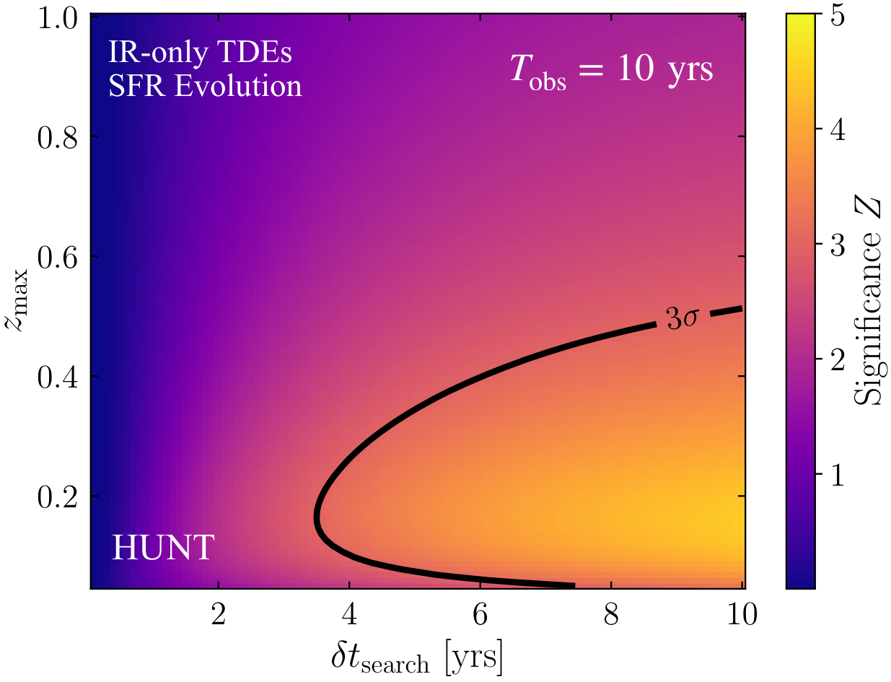
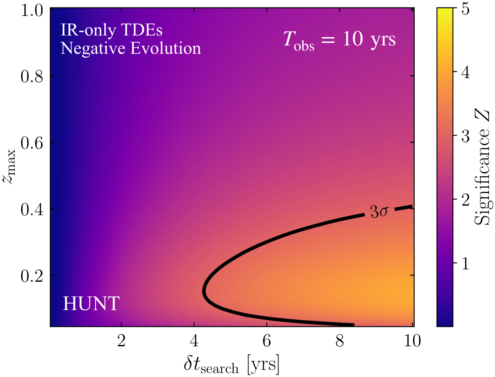
图注：HUNT对仅红外TDE总体的预期叠加探测显著性，横轴为中微子搜索窗持续时间（年），纵轴为最大红移；环境密度取10⁶ cm⁻³。上、下面板分别采用跟随恒星形成率及负TDE红移演化。观测总时间10年，只计能量超过10⁵ GeV的中微子；颜色表示预期显著性，黑线标出3σ。
怎么看这张图：扩大红移范围增加源数也增加背景，搜索窗过长同样会稀释信噪比。此图是简化响应和总体假设下的前景计算，搜索窗试验数未被完整全局标定。
来源与置信度：arXiv HTML；source verified；https://arxiv.org/html/2610.00965v1/hunt_sig_sfr.png；https://arxiv.org/html/2610.00965v1/hunt_sig_negev.png
强相关工作
本文引用Matsumoto与Piran关于射电外流约束及晚期射电耀发的工作（2021，DOI:10.1093/mnras/stab2418；2024，DOI:10.3847/1538-4357/ad58ba），作为深牛顿电子修正和核周密度形状的动机。这里的关系由本文§II.1及参考文献核实，并不意味着那些射电研究已经唯一测出本文红外百万密度基准；本文进一步把动力学延伸到质子碰撞和种群中微子。
§V.3明确区分Murase等2020的盘冕、热流及隐蔽风模型（DOI:10.3847/1538-4357/abb3c0）和本文较大半径外流—核周介质场景。前者的靶与耗散区不同，不能按同一个密度参数比较优劣；本文也指出IR光子靶pγ需要更高质子能量，而本文pp信号不必跟随尘埃回声。以上是本文给出的前作关系，未宣称独立复现各前作。
同一事件 / 同类源线索：
相似工作：
基础理论 / 方法工作：
相反观点 / 张力线索：
（未提供）
2. Three New Likely Spider Millisecond Pulsar Binaries and Optical Kinematic Tracers of Intrabinary Shocks
- 来源：arXiv / astro-ph.HE
- 链接：https://arxiv.org/abs/2610.00455
- 作者：Jay Strader, Rebecca Kyer, Laura Chomiuk, Elias Aydi, Peter Craig, Thomas M. Do, Isabella Molina, Teresa Panurach
- 公告 / 来源日期：2026-10-02
- 阅读层级：重点精读
- 评分：novelty 8/10，importance 8/10，relevance 8/10，final 9.00/10
- 推荐理由：蜘蛛脉冲星候选伴星与Halpha反相位径向速度将双星内激波几何连接可观测运动学；需检查替代来源与未确认脉冲。
中文题目：三组蜘蛛脉冲星候选：用Hα径向速度定位双星内激波
做了什么：作者对三个未识别Fermi伽马源开展Swift、Gaia和SOAR光谱/光度联合跟踪，找到周期约3.6小时、7.3小时和30.5小时的光谱双星。前两者位于伽马定位椭圆内，伴星光谱、X射线亮度和光变支持红背蜘蛛脉冲星分类；第三者位于95%椭圆外，仍可能与背景活动星系竞争对应。三者均未在本文中确认脉冲。
最有辨识力的结果来自4FGL J1020.4−5314：两年间持续的宽Hα发射线随轨道变化，与伴星吸收线反相位且振幅更小，说明发射气体靠近不可见主星。结合很低的X射线亮度与缺少蓝连续谱，作者支持包围脉冲星的双星内激波解释。这个结果增加了激波运动学信息，但发射线中心不是脉冲星自身速度，不能直接求质量比。
为什么重要：以往蜘蛛系统激波几何主要来自X射线光变建模，宽发射线究竟属于伴星风还是激波常不清楚。这里稳定且覆盖轨道的Hα提供另一个观测维度：不仅知道系统有气体，还能判断线发射区域位于双星哪一侧。主星附近与伴星附近的两种相位行为，在本文两个发射线系统中形成自然对照。
理论 / 观测 / 仪器方法价值：可借鉴的流程是先用吸收线建立伴星轨道，再比较发射线的相位、中心速度和线宽，并用X射线亮度与连续谱排查吸积盘。BMJD/TDB时间统一、地球大气谱线零点校正和多年周期误差传播都不可省。它适用于持续发射且能覆盖足够轨道相位的系统，不能对偶发单历元谱线直接套用。
为什么应该关注：蜘蛛双星是近尺度脉冲星风与伴星流相互作用的实验室；几何位置有助于把粒子加速、X射线调制和伴星加热联系起来。下一步有价值的是同时获取X射线轨道光变与相位分辨光谱，以及搜寻射电或伽马脉冲。现有数据不支持宣称已测自转、精确中子星质量或TeV辐射。
展开详细解读：文章讲解、背景、理论、重点章节、图表与相关工作
文章详细讲解
科学问题
蜘蛛毫秒脉冲星由旋转供能的中子星与低质量、受剥离或加热的伴星组成，风碰撞可产生双星内激波。但光学发射线常随时间消失，难以追踪其位置。本文同时解决新候选识别与线发射几何定位的问题，重点不是单纯增加三个源名。
作者怎么做
作者在Fermi误差区寻找Swift源和Gaia对应体，取得SOAR多年光谱，用恒星模板拟合吸收线径向速度，再用开普勒轨道模型估计周期、速度振幅和系统速度。独立测量Hα线中心与宽度，把光度按同一历元折叠，检查加热、椭球形变和发射线运动是否相容。
关键结果
J1020的吸收线半振幅381±6 km/s，Hα形式拟合半振幅约88 km/s且反相位，线宽约2100 km/s；气体位置与主星附近相符。J1408的光变主要是椭球形变、几乎没有加热，仍具有典型红背伴星的温度—半径失配。J1429的30.5小时周期较长，Hα与伴星同相，可能位于伴星风或邻近激波。
局限和下一步
这仍是三组候选的初步刻画。J1020吸收线轨道的表观偏心更可能来自辐照导致的亮度中心偏移；J1429的伽马关联、距离和供体演化态都不稳。作者有意推迟完整光变质量拟合，等待脉冲确认和计时；联合X射线与光谱可检验激波几何，却还没有在本文实施。
关键结果是怎么做出来的
第一步建立多波段身份链。J1020与J1408各有一个Swift源位于Fermi的68%定位椭圆内，光学位置分别与Swift相差1.6和0.9角秒。Gaia给约1.1和1.08 kpc距离。曲率伽马谱、低变化与光谱双星性质彼此支持，但这些对应证据不是已检测到中子星脉冲。
第二步控制光谱速度零点。SOAR使用相邻FeAr弧灯做初始波长校准，再用TelFit地球大气谱特征校正零点，以减少挠曲与导星残差。RVSpecFit用与分辨率卷积的PHOENIX模板拟合金属吸收线，并屏蔽发射与大气区；因此Hα结果不是混进伴星模板后人为得到的同一条曲线。
第三步读J1020的轨道与加热。28次速度测量的中位误差25 km/s，偏心模型的χ²/自由度为34/22，周期0.1508431日；表观偏心0.111±0.015不应直接视为真实轨道偏心。谱拟合温度从伴星下合约4850 K到上合约5600 K变化，光变幅度也跨夜变化，支持辐照改变吸收线权重。
第四步比较发射与吸收，而非只看双峰。J1020 Hα单高斯拟合中心相对伴星差半个轨道，双高斯峰间距约1200 km/s。双峰本身也可能像吸积盘，但该源X射线只有约2×10³¹ erg/s，远低于典型过渡毫秒脉冲星盘态的量级，且无蓝连续谱；多条证据共同支持脉冲星附近的激波气体。
第五步保留自然对照和反例。J1429 Hα较窄并与伴星同相，不能用J1020的图像统一解释所有蜘蛛。其光学长期增亮在折叠前按线性趋势扣除，光度与光谱平均历元相隔近五年，周期误差可累积约0.1相位，故光变极小值偏移不自动意味着非轨道机制。
展开背景、理论、公式、模型和章节导读
背景知识
毫秒脉冲星通常经历伴星吸积再循环，转动加快后可转入旋转供能态。蜘蛛系统的伴星仍含富氢物质，受剥离、加热和风作用；较重伴星常称红背，极低质量伴星称黑寡妇。分类依赖物理性质而不只按轨道周期划线，J1020短周期但夜面温度较高，仍更像红背。
脉冲星风是高能粒子与电磁能流，伴星可提供风或磁场屏障。两者平衡形成激波面，形状可能包围伴星，也可能包围脉冲星。X射线同步辐射与流动的多普勒增强可调制轨道光变，但仅凭光变通常有几何退化；谱线运动带来不同约束。
吸收线主要来自伴星光球，发射线来自较稀薄气体，两者不必共享速度场。Hα是氢跃迁而非直接测量高能电子；识别线发射位置后仍需模型连接冷热等离子体。宽线可含轨道运动、局部流动和结构投影，不能把2100 km/s线宽当作恒星绕行速度。
伽马选择帮助找到射电被电离气体遮蔽的蜘蛛，但误差椭圆内位置匹配并不能保证源身份。Gaia距离、X射线光度、供体温度与半径提供交叉检验。尤其J1429在95%伽马椭圆外，附近还有AGN，要求后续定位或脉冲证据解决；本文没有给这一关联一个已校准的后验概率。
基础理论 / 方法脉络
轨道径向速度来自沿视线的速度分量。圆轨道的吸收线速度近似正弦，振幅由伴星轨道尺度、周期和倾角共同决定。相位差半周意味着主要运动分量相反，因而可以判断发射位置更靠近哪侧，但沿激波流动会叠加额外速度，破坏简单双恒星质心关系。
质量函数把周期和速度半振幅压缩成对主星质量的几何约束，仍包含倾角和伴星质量。J1020的辐照还会使吸收线测得亮度加权速度偏离质心速度，通常把质量函数抬高；因此0.85太阳质量不是中子星质量测量。本文以保守的候选判据使用它，没有据此宣布大质量中子星。
伴星受潮汐拉伸时，每轨道可见两次椭球光变；辐照使朝向主星的一面更亮，产生单侧加热成分。重力昏暗、星斑、时变激波与大气输运都能改变形状，所以多历元光变不是只需改变一个倾角的静态曲线。J1408是弱加热对照，J1020跨夜幅度变化限制了简单模型的适用。
温度和半径提供独立恒星结构线索。正常G型矮星的温度不应配上M型矮星的小半径，J1408却有约5725 K与0.32太阳半径，这符合被剥离或加热供体。由光度反演半径依赖距离、消光与热修正；夜面估计减少辐照影响但不保证完全无系统误差。
公式与推导
原文以光谱和光度证据为主，没有六条连续理论方程。下列六步是解释§2—3轨道、质量函数及光度推断的标准教学关系，不是作者新增拟合或独立复现。
- 在统一BMJD/TDB时间下建立相位：
P与T₀用日，T₀定义为推断的脉冲星升交点历元。伴星上、下合与升交点不同，读图时先对齐定义，再讨论受热面朝向。
- 圆轨道伴星的教学速度模型为：
γ是系统速度，a₂为伴星质心轨道半径，φ₀吸收具体历元约定。速度通常用km/s，做动力学计算时需换一致单位；J1020实际吸收线须允许辐照失真，不能强行使用纯正弦解释残差。
- 联立开普勒定律与质心关系得到质量函数：
M₁是不可见主星，M₂是伴星，e是真实轨道偏心。只有速度确实代表质心时才可作严格动力学约束。J1020的表观e和K₂可能受辐照影响，作者报告0.85±0.05太阳质量但明确可能偏高。
- 误差随振幅三次方传播，说明系统误差为何重要：
这是小偏移的一阶教学微分，不是统计独立误差的平方和公式。辐照导致的速度偏差无法通过形式拟合误差自动消除；Hα的88 km/s也不能在未建气体动力学前代入主星K₁。
- 距离与夜面温度连接半径：
这里采用各向同性等效夜面量，F_bol需由测光、消光和热修正取得。由此R随d、T的负二次方变化；Gaia距离误差可主导J1020的半径不确定性，不能把半径估计误称为直接成像。
- 跨多年折叠的周期不确定性积累为：
忽略历元误差与协方差时这是教学近似。J1429光谱与ZTF相隔近五年，作者估计约0.1相位误差，足以影响极小值对齐；应先传播星历，再主张轨道结构发生了变化。
模型拟合 / 应用方法
光谱链条首先处理分辨率与零点。SOAR常用400线每毫米光栅、约3950—7900埃覆盖；不同狭缝对应约7.3或5.4埃分辨率。恒星模板先卷积到观测分辨率，再屏蔽Hα等发射区拟合金属吸收；地球大气零点校正用于降低跨夜系统偏移。本文没有对原始二维谱重做独立还原，本解读依据作者所述处理及表格。
轨道拟合使用TheJoker。J1408的41个历元得到周期0.3043105日、K₂=262±4 km/s及χ²/自由度43/37，增加偏心没有明显改善。J1429的63个历元得到1.27162日、169±5 km/s及99/59，残差较大而偏心也未明显改善；作者未发现另一个周期的后验支持，这不等同全部系统误差已经排除。
Hα另做单高斯中心和宽度拟合，即使J1020有双峰，单高斯仍用于稳定比较线中心。约88 km/s是形式振幅，不能把它看成主星轨道的干净测量；气体可沿弯曲激波流动，辐射权重也随相位变化。区分主星附近与伴星附近的证据比精确质量比推断更稳健。
光度方面J1020用SkyMapper参考星做差分测光，滤光片颜色差可有约0.1等系统偏移，作者因缺颜色未校正。J1408采用ATLAS强制测光，J1429剔除ZTF坏标记并去除长期线性增亮。所有时间统一后才折叠；周期、长期变化与颜色误差应分开保留。
X射线计数少到不足光谱拟合，作者假设光子指数1.7和银河吸收，把计数率换成0.5—10 keV流量，再用距离推亮度。这是模型依赖估计，尤其J1429的8 kpc仅为解释亚巨星光度时使用的尺度。本文不做完整光变倾角与质量后验，因此相关参数不存在可报告的精确联合约束。
重点章节 / 结果段落怎么读
-
§2.1—2.3：先核对每个对应体相对Fermi/Swift误差区的位置，第三个源不能与前两个同等确认。
-
§2.4—2.5：检查光谱零点、模板屏蔽、滤光片和时间系统，理解跨夜速度与相位比较的基础。
-
§3.1与图2—3：把辐照引起的假偏心、Hα半轨道反相及低X射线亮度连起来，而非只看双峰外观。
-
§3.3与图6：观察伴星侧发射的反例，并核对五年星历外推如何影响光度折叠。
-
§4.2—4.3：区分尚不稳的J1429身份与较稳的J1020气体运动学证据，明确下一步脉冲和联合X射线观测。
关键图表与解读
图3
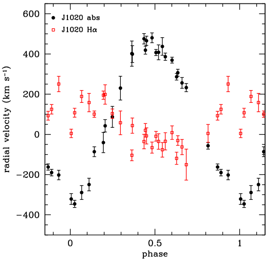
图注：4FGL J1020.4−5314的吸收线与Hα发射线径向速度比较。横轴为轨道相位，纵轴为径向速度；发射线比吸收线相差半个轨道周期且振幅更小，与发射来自包绕脉冲星的双星内激波相容。黑实心点为吸收线速度，红空心点为Hα；速度单位km/s，误差棒为原文测量不确定性。
怎么看这张图：先认清金属吸收线追踪伴星、Hα追踪发射气体，再比较反相关系。小振幅只定位可能的发射区域，不能直接代入双星质量比。
来源与置信度：arXiv HTML；source verified；https://arxiv.org/html/2610.00455v1/j1020_em.svg
图6
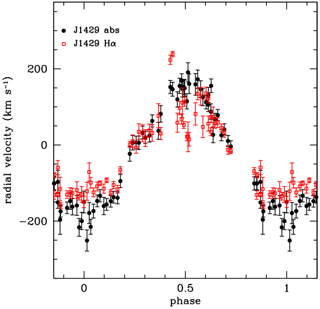
图注：4FGL J1429.8−0739的吸收线与Hα发射线径向速度随轨道相位的比较。与J1020不同，两类谱线速度同相，指向位于伴星附近的风或激波发射。黑实心点为吸收线速度，红空心点为Hα；速度单位km/s，误差棒为原文测量不确定性。
怎么看这张图：同样的谱线诊断在不同源给出不同空间归属；相位关系比“双峰就等于吸积盘”的外观判断更有约束力，但同相并不唯一决定风的几何。
来源与置信度：arXiv HTML；source verified；https://arxiv.org/html/2610.00455v1/j1429a_emn.svg
强相关工作
作者在§4.3将本文与Wadiasingh等2017的相对论弓形激波约束（DOI:10.3847/1538-4357/aa69bf）及Kandel等2019的双星内激波同步辐射图样（DOI:10.3847/1538-4357/ab24d9）联系起来。那些引用提供X射线几何建模背景；本文新增的是光学线中心随轨道变化，不能把两类数据自动当作同一次联合拟合，联合建模仍是作者的建议。
§3.1引用Davey与Smith 1992（DOI:10.1093/mnras/257.3.476）说明辐照使吸收线亮度中心偏离质心，产生假偏心与质量偏差。§4.3又把J1429与PSR J1311−3430等伴星侧发射实例比较。关系来自本文正文和参考表的核查，未重新分析这些前作；它们共同说明谱线相位是空间定位线索，而非普适的激波形状反演。
同一事件 / 同类源线索：
相似工作：
基础理论 / 方法工作：
相反观点 / 张力线索：
（未提供）
相关简报
1. 25 Years of Mrk 421 with XMM-Newton: Unveiling Structured Jets and Energy-Dependent Escape
- 来源：arXiv / astro-ph.HE
- 链接：https://arxiv.org/abs/2610.01214
- 作者：Tek P. Adhikari, Gopal Bhatta, Sangeetha Kizhakkekalam, Navaneeth P K, Alex Markowitz, Zhicheng He, Santanu Mondal
- 公告 / 来源日期：2026-10-02
- 阅读层级：相关简报
- 评分：novelty 7/10，importance 7/10，relevance 10/10，final 9.05/10
- 推荐理由：Mrk421的76个XMM历元与0.19谱折变检验简单冷却，对TeV源联合建模有直接价值但机制非唯一。
中文题目：Mrk 421 的二十五年X射线谱：弱谱折断与能量依赖逃逸
问题、方法与结论：作者统一分析2000—2025年76次XMM-Newton观测，先去除软质子高背景并检查堆积，再在0.6—10 keV比较单幂律、折断幂律和对数抛物线。结合F检验及信息准则，59次观测偏好折断幂律、17次偏好对数抛物线。折断能量集中在约2 keV，两侧光子指数差约0.19，明显小于最简单稳态同步辐射冷却预期的0.5。
意义与贡献：这组长期档案表明，简单的单区冷却图像不足以概括所有谱形。能量越高的电子越快逃逸可以减弱谱折断，但多区辐射、不同磁场及粒子注入也可能产生类似曲率；“结构化喷流”是解释方向，而非已被直接成像证实的结构。
可借鉴之处：可借鉴的是对同一源跨历元采用一致能段、固定银河吸收、堆积处理和多种模型判据，并把谱形变化与同步辐射物理预期比较。能量依赖逃逸指数约0.62来自特定稳态标度关系，适合当作模型检验目标，不宜直接作为粒子输运的测量值。
局限与关注点：76次曝光是稀疏、偏向特定活动状态的观测，不能当作连续25年监测。折断幂律的经验拟合优势不证明电子分布存在尖锐折点；文中固定磁场和多普勒因子的时间尺度估计也有条件。与TeV数据联用时，应优先取得同时观测，再检查不同辐射区是否共享同一电子谱。
图10
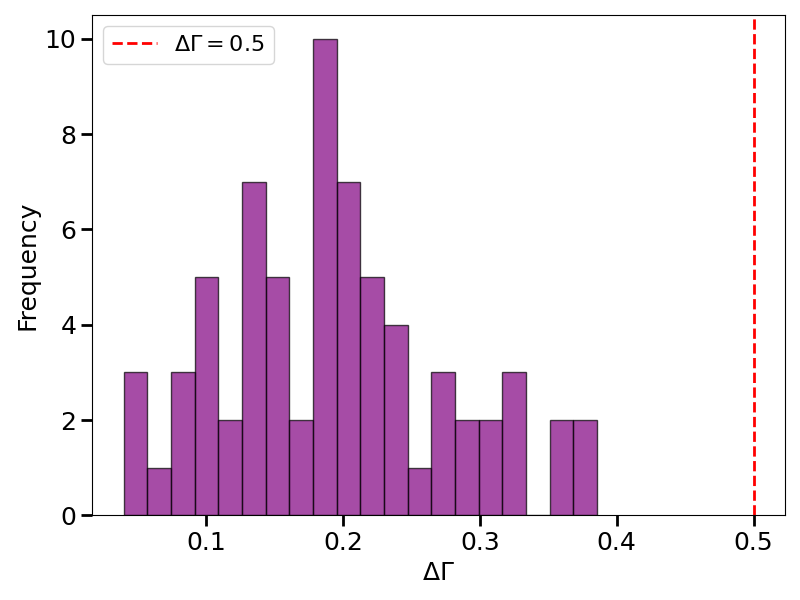
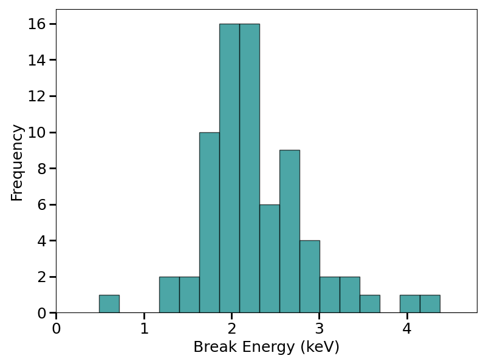
图注：上图为折断后与折断前光子指数之差Γ₂−Γ₁的直方图；红色竖虚线标出标准单激波同步辐射冷却预期。下图为谱折断能量的分布，单位keV。
怎么看这张图：主要对比观测分布与标准0.5的距离。该图展示经验谱参数的统计，不等于直接测量电子逃逸率。
来源与置信度：arXiv HTML；source verified；https://arxiv.org/html/2610.01214v1/del_gama_hist.png；https://arxiv.org/html/2610.01214v1/Eb_hist1.png
2. AT2018hyz: Predictions for a Sky Projection from a Delayed Off-Axis Jet
- 来源：arXiv / astro-ph.HE
- 链接：https://arxiv.org/abs/2610.00632
- 作者：Ranadeep Ghosh Dastidar, Paul C Duffell
- 公告 / 来源日期：2026-10-02
- 阅读层级：相关简报
- 评分：novelty 7/10，importance 7/10，relevance 9/10，final 8.70/10
- 推荐理由：AT2018hyz延迟与视角退化可由0.3至0.6mas投影检验，对延迟外流识别有明确预测。
中文题目：AT2018hyz 延迟离轴喷流的射电图像预测
问题、方法与结论：潮汐瓦解事件AT2018hyz的晚期射电增亮可以由延迟启动、偏离视线的喷流解释，但光变拟合中能量、环境密度和视角高度退化。作者用二维轴对称相对论流体模拟，主要拟合9 GHz光变并检查5和20 GHz数据，在不同视角分别估计能量、密度和启动延迟，进一步预测事件后3000、3300和3600天的射电亮度分布与质心位置。
意义与贡献：在固定喷流开角和微观参数的模型族内，约30°—90°的视角都能解释光变，20°方案不能。图像和相对光学爆发位置的质心偏移却不同：部分模型可达约0.64毫角秒的偏移，而接近侧视的方案约0.3毫角秒。这给甚长基线干涉测量提供了可区分模型的观测量。
可借鉴之处：方法价值是把光变后验推进到天空面亮度、等通量轮廓和质心运动，避免仅比较最佳拟合曲线。应用时需保留光学参考位置、观测频率及灵敏度定义，并把质心位移与发射区角尺寸分别报告，才能判断实际干涉阵列是否能分辨。
局限与关注点：这些是模型预言，尚非已测得的移动喷流。电子与磁场能量比例、电子指数、喷流开角和均匀环境均被固定；不同视角的独立拟合也不等于完整联合视角后验。作者另指出，若射电峰值比采用的时间更晚，图像尺度预测需调整。原文一处投影时间公式记号不一致，因此本文只引用图像结果，不据其重做推导。
图5

图注：表1参数下，不同观测视角和距光学瓦解不同时间的天空投影图。频率为9 GHz，轮廓分别包围1 mJy和5 mJy的总流量；坐标单位毫角秒，源红移0.0457。
怎么看这张图：比较相对光学原点的位移、形状及随时间变化；不要把亮度峰或质心位移当成轮廓直径。轮廓是包围流量条件，不是表面亮度阈值。
来源与置信度：arXiv HTML；source verified；https://arxiv.org/html/2610.00632v1/sky_proj_grid_4.png
3. Recycling serendipitous observations of XRISM for dark matter searches
- 来源：arXiv / astro-ph.HE
- 链接：https://arxiv.org/abs/2610.01877
- 作者：Lidiia Zadorozhna, Denys Malyshev, Oleg Ruchayskiy
- 公告 / 来源日期：2026-10-02
- 阅读层级：相关简报
- 评分：novelty 8/10，importance 7/10，relevance 8/10，final 8.65/10
- 推荐理由：XRISM低计数率闲置观测改进银河暗物质谱线约束，3sigma局部残差不能作发现；应核查背景与试验数。
中文题目：XRISM 档案中的3.53 keV残差：约束与弱线索
问题、方法与结论：作者从公开XRISM/Resolve档案筛选60次低计数率观测，筛选后总曝光2.917 Ms，在3.43—3.57 keV用泊松似然搜索窄线，同时比较直接叠谱、银河晕多普勒校正叠谱及按暗物质柱密度关联线强的联合拟合。校正叠谱在约3.5307 keV出现约26个线光子的残差，局部显著性约3σ；文中能量搜索试验数估算使其降至约2—2.5σ。
意义与贡献：价值主要在高能量分辨率的衰变线约束及可复用的档案策略。要求不同视场线强遵循银河晕分布时，显著性仅约1.5—1.7σ；空间上的过量也没有清楚偏向高暗物质柱密度视线。因此叠谱弱线不能升级为惰性中微子或暗物质的发现。
可借鉴之处：可借鉴的是同时报告探测器坐标系、天体静止系和带空间模板的联合检验，并检查候选仪器荧光线的伴随谱线。作者还按天空方向合并为28个视场，检查过量与背景计数率的关联，帮助判断叠加信号是否由少数特殊观测支配。
局限与关注点：全局显著性采用近似独立能量位置计数，并非完整端到端蒙特卡洛标定。过量与计数率的相关仅属边缘线索；未见镉的伴随线可削弱特定荧光解释，却不能排除所有仪器系统误差。柱密度模型、非X射线背景和视场选择仍影响限制，应等待独立样本验证。
图6
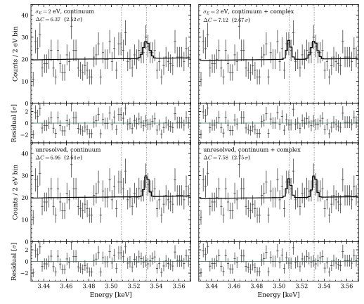
图注：60次观测在探测器坐标系中的叠加谱，范围3.43—3.57 keV，以2 eV显示分箱和泊松误差绘制，红线为最佳模型。上排采用3.5311 keV、宽度σE=2 eV的高斯线，下排采用未分辨线；左列只加连续谱，右列另含3.5089 keV氯/钾线复合体。竖点线标出两能量，每格列出ΔC和局部显著性，下方为以1σ为单位的残差。原文图注称模型为红线，所提供SVG实际显示为深色线；以曲线形状及面板标签辨认。纵轴为每2 eV显示箱的计数。
怎么看这张图：比较加入已知线复合体及改变线宽后的残差稳定性。这是探测器系叠谱，不是多普勒校正结果，也不是空间模板联合拟合的显著性。
来源与置信度：arXiv HTML；source verified；https://arxiv.org/html/2610.01877v1/spectrum_nominal_N60.svg
4. A Multi-Wavelength Picture of the Surprisingly Short 2024/25 Outburst from EXO 0748-676
- 来源：arXiv / astro-ph.HE
- 链接：https://arxiv.org/abs/2610.00495
- 作者：Amy H. Knight, Lauren Rhodes, Noel Castro Segura, Douglas J. K. Buisson, Aru Beri, David M. Russell, Kevin Alabarta, Maria C. Baglio
- 公告 / 来源日期：2026-10-02
- 阅读层级：相关简报
- 评分：novelty 7/10，importance 7/10，relevance 8/10，final 8.35/10
- 推荐理由：九台设施捕获EXO0748十个月失败转态爆发及外盘复合衰落，与此前23年爆发形成有用对照。
中文题目：EXO 0748−676 的短爆发与未完成的软态转变
问题、方法与结论：作者整合九个设施的观测，重建中子星低质量X射线双星EXO 0748−676在2024年3月至2025年1月约十个月的爆发，并与1985—2008年的长期活动比较。此次源始终未进入典型软态；早期约5 keV以下的吸收明显，谱拟合需要额外部分覆盖电离吸收。光学与X射线总体联动，快速衰落阶段的颜色变化与盘冷却图像相容。
意义与贡献：同一个双星可以经历持续多年和不足一年的不同吸积事件，说明只由轨道尺度推断爆发持续时间并不充分。光学—X射线关系斜率约0.72±0.16支持辐照再处理参与光学辐射，但不能单凭一个斜率排除其他盘或外流成分。
可借鉴之处：可复用的是把硬度演化、随时间变化的吸收和光学颜色—星等轨迹放在一起判断状态。颜色轨迹与约11000 K附近的快速冷却相接，有助于检验氢复合引起的盘热不稳定；需同时考虑消光、距离和实际采样区间。
局限与关注点：文中0.42个太阳半径、7.1 kpc的黑体曲线是颜色图上的示意参考，并非独立测得的真实吸积盘半径或单温结构。较晚阶段信噪比下降，谱中不再要求某一成分不等于该成分消失；LCO也未覆盖最初上升。高倾角、遮挡和吸收使本征光度及状态判定仍有系统不确定性。
图6
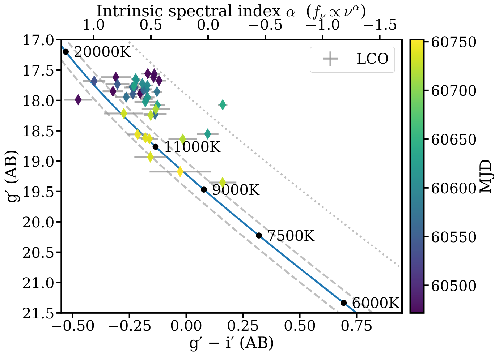
图注：LCO颜色—星等图。实线为距离7.1 kpc、固定圆形发射面积半径0.42个太阳半径的黑体随温度变化的轨迹，圆点对应标注温度；虚线将面积改变±10%，点线为采用Knight等双星参数的潮汐半径参考。模型施加E(B−V)=0.06的消光。菱形为LCO测量，颜色表示对应MJD。横轴为g′−i′颜色、纵轴为g′星等（均为AB系统）；上轴给出等效本征谱指数。
怎么看这张图：沿时间颜色看衰落时的冷却方向，再比较黑体参考。参考圆面积不是由图中数据独立反演出的真实盘几何。
来源与置信度：arXiv HTML；source verified；https://arxiv.org/html/2610.00495v1/CMD_BB_g_axis.png
5. X-ray Through Radio Observations and Modeling of the Soft X-ray Flash GRB 250419A
- 来源：arXiv / astro-ph.HE
- 链接：https://arxiv.org/abs/2610.00508
- 作者：Genevieve Schroeder, Anna Y. Q. Ho, Gavin P. Lamb, Tanmoy Laskar, Daniel A. Perley, Ore Gottlieb, Tomas Ahumada, Igor Andreoni
- 公告 / 来源日期：2026-10-02
- 阅读层级：相关简报
- 评分：novelty 7/10，importance 7/10，relevance 8/10，final 8.35/10
- 推荐理由：极软XRF的宽波段余辉约束低能高洛伦兹喷流；能量注入及离轴存在退化。
中文题目：GRB 250419A：软X射线闪的喷流能量与视角退化
问题、方法与结论：GRB 250419A的瞬时辐射峰值能量低于约4 keV，是由SVOM发现的软X射线闪。作者联合射电、光学和X射线余辉，比较正视前向激波、含能量注入的允许离轴方案及结构化喷流方案。早期约两天内较平缓的光变与随后变陡可由不同喷流结构解释，经束射修正的动能约在10的49至50次方erg量级。
意义与贡献：软的瞬时谱不必意味着初始喷流一定很慢。含注入模型得到初始洛伦兹因子约178，结构化喷流的视线方向和轴心则可具有不同速度。不过余辉模型仍无法唯一判定正视还是离轴，也不能把模型间相容误写为喷流几何已经确定。
可借鉴之处：可借鉴的是在多波段光谱能量分布上同时展示不同模型、上限以及被排除的数据，而非只用单个能段判断机制。能量注入也应区分观测期间实际增加量与模型的渐近总增幅：本文观测窗口内约1.8倍，不能将约9.5倍的渐近因子当作已经发生的注入。
局限与关注点：推断依赖微观参数先验、外部环境和所采用的喷流角结构，射电闪烁未被完整纳入误差模型，部分数据也未参与拟合。低光度和很软的谱并未自动建立一种新的爆发现象；更早的射电观测及能区覆盖可帮助区分不同模型的峰值通过和注入过程。
图9
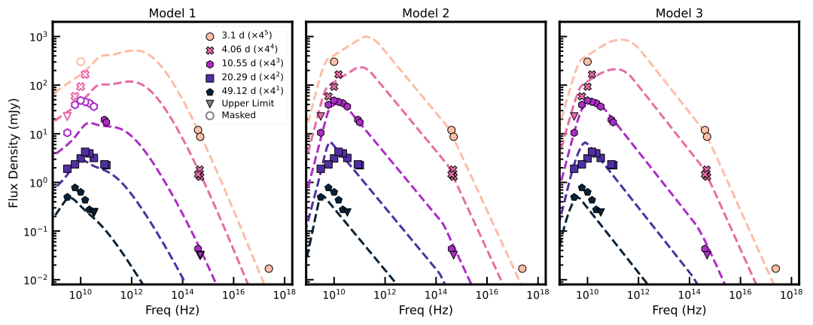
图注：若干时刻从射电至X射线的光谱能量分布，三角形表示上限。左、中、右面板依次为正视标准同步余辉（模型1）、允许能量注入和离轴视角（模型2）、允许结构化喷流及离轴视角（模型3）；空心符号表示未纳入余辉拟合的数据。横轴为频率Hz、纵轴为流量密度mJy，各颜色区分标注历元。
怎么看这张图：横跨频率比较模型差别和被排除数据的位置。多个模型均能描述主要趋势，意味着现有观测仍保留结构和能量注入退化。
来源与置信度：arXiv HTML；source verified；https://arxiv.org/html/2610.00508v1/ModelComparisonSED.svg
6. Superorbital Phase Evolution and Identification of New Anomalous Low State Candidates for Her X-1
- 来源：arXiv / astro-ph.HE
- 链接：https://arxiv.org/abs/2610.01123
- 作者：Yi Chou, Jun-Lei Wu
- 公告 / 来源日期：2026-10-02
- 阅读层级：相关简报
- 评分：novelty 7/10，importance 7/10，relevance 8/10，final 8.35/10
- 推荐理由：35年HerX1相位和客观异常低态识别提供长期约束；盘质量变化属一阶模型推断。
中文题目：Her X-1 超轨道相位漂移与异常低态候选
问题、方法与结论：作者汇集约35年的五套X射线监测资料，追踪Her X-1约35天超轨道周期的主高态峰值及其到达相位。通过对峰值强度排序并寻找间隙，他们在1991年和2015年各识别一段持续约五个周期的异常低态候选，同时描述2025年事件后的恢复。跨仪器峰值序列用于区分强度骤降与缓慢的相位演化。
意义与贡献：这项工作的增量是将低态候选和长期相位漂移放进统一时间线。约3400天的平滑变化尺度主要受两段约3543及3241天的间隔支持，不能当作新发现的长期相干周期；异常低态也不自动等于吸积率下降，盘的遮挡几何可能改变可见辐射。
可借鉴之处：可借鉴的是先建立逐周期事件时刻，再跨监测器比较强度阈值和相位偏移，避免直接对整条不均匀光变寻找单一周期。倾斜刚性盘的简化模型进一步把进动频率与盘质量联系，为检验盘结构变化提供量级参考。
局限与关注点：排序间隙的标准化数值不是经过零假设标定的全局发现显著性，新低态还未用脉冲消失等独立证据确认。盘质量约1.79%及半径约0.895%的变化依赖固定倾角、表面密度形式和归一化，属于模型换算而非直接测量；盘翘曲、密度分布或倾角变化均可能造成退化。
图4
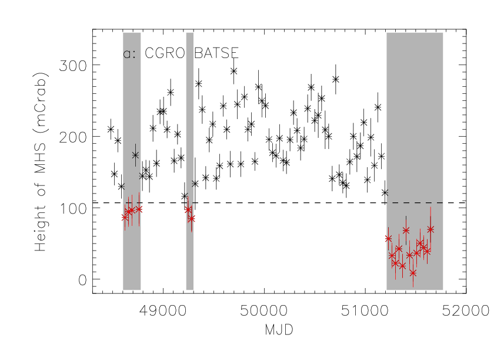
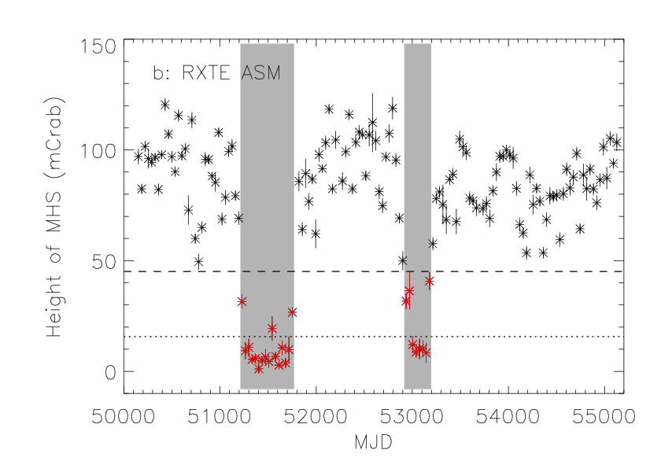
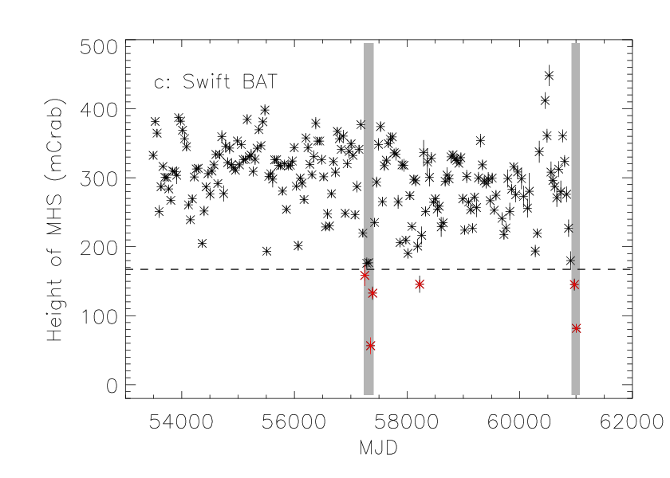
图注：主高态峰值强度随时间的演化，三面板分别来自CGRO/BATSE、RXTE/ASM和Swift/BAT。水平虚线划分正常态与过渡态，面板b的点线划分过渡态与深低态；低于虚线的点标红。状态转换中点作为低态边界，灰区为已知异常低态及新候选。采用至少两个超轨道周期的持续时间标准，因此MJD约58223、仅持续一个周期的低态不归为异常低态。横轴为MJD，纵轴为以mCrab表示的峰值强度。
怎么看这张图：逐仪器读取相对阈值，再检查低态持续几个周期。图中灰区包括候选，强度筛选本身不能替代脉冲等独立确认。
来源与置信度：arXiv HTML；source verified；https://arxiv.org/html/2610.01123v1/als_batse_select_rank.png；https://arxiv.org/html/2610.01123v1/als_asm_select_rank_erm.png；https://arxiv.org/html/2610.01123v1/als_swift_select_rank_erm.png
7. Detection of kilosecond hard lags in the new pulsating ULX candidate NGC 7456 ULX-1
- 来源：arXiv / astro-ph.HE
- 链接：https://arxiv.org/abs/2610.01444
- 作者：W. Leone, F. Pintore, C. Pinto, N. O. Pinciroli Vago, A. Sanna, A. Wolter, T. Di Salvo, R. Iaria
- 公告 / 来源日期：2026-10-02
- 阅读层级：相关简报
- 评分：novelty 7/10，importance 7/10，relevance 8/10，final 8.35/10
- 推荐理由：两历元ULX千秒硬滞后约束超临界传播与扩散；需查显著性和分箱敏感性。
中文题目：NGC 7456 ULX-1 的千秒硬滞后与再处理吸积流
问题、方法与结论：作者比较NGC 7456 ULX-1在2018年和2023年的两次XMM-Newton观测，以自适应光变分箱、互相关和蒙特卡洛扰动估计软硬能段的延迟。整段观测中硬X射线落后软X射线约1230±460秒和1010±500秒；选定短区段可出现更大的约1987±334秒延迟。暖的、光学厚的介质对不同温度种子光子进行康普顿散射，可同时解释部分能谱和时延特征。
意义与贡献：长达千秒的滞后为超爱丁顿吸积流中的扰动传播与风中光子扩散提供了约束，比仅凭时间平均谱判断几何更有信息。两者可能共同作用，本文尚未以唯一传播模型把延迟换算成可靠的黑洞或中子星质量。
可借鉴之处：可借鉴的是比较全时段与局部区段互相关，再用频域相干性检查延迟是否稳定。能谱中的冷、热种子光子对应不同有效尺度，联合时域结果有助于检验再处理层；不过这些尺度来自特定谱分解，不能直接视为裸露发射面的精确半径。
局限与关注点：局部区段约5.9的延迟与误差比并非包含窗口搜索的全局发现显著性；频域相干性最高仅约0.3，短段结果更受统计量限制。机器学习分类及约4.4秒的候选信号都不足以确认脉冲，因此仍应称为脉动ULX候选。谱中的约1 keV残差也有发射与吸收等非唯一描述。
图5
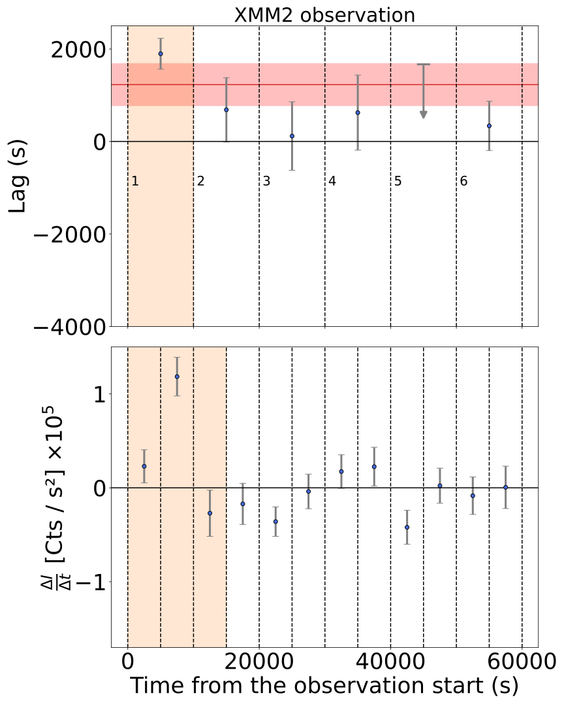
图注：上图为XMM2观测中10 ks窗口测得的时延随时间变化，误差为1σ；正值表示软能段领先硬能段。红水平线为全观测时延，红阴影是整段曝光蒙特卡洛MDP分析的独立1σ误差，并非各局部点的散布或平均误差。下图为连续5 ks窗口内计数率时间导数，误差表示68%区间。横轴为距观测开始的秒数，上图时延也以秒表示。
怎么看这张图：先比较局部时延与整段结果，再看计数率变化是否对应。局部较大时延及较小误差不能直接作为包含扫描试验数的发现显著性。
来源与置信度：arXiv HTML；source verified；https://arxiv.org/html/2610.01444v1/slope_vs_time_1.svg
8. The Impact of a Clumpy Ambient Medium on the Dynamics and Synchrotron Emission of AGN Jets
- 来源：arXiv / astro-ph.HE
- 链接：https://arxiv.org/abs/2610.01983
- 作者：Ivan Almeida, Christian Fendt, Bhargav Vaidya
- 公告 / 来源日期：2026-10-02
- 阅读层级：相关简报
- 评分：novelty 7/10，importance 7/10，relevance 8/10，final 8.35/10
- 推荐理由：三维相对论MHD连接团块介质夹带与辐射增强，固定注入喷流提供对照但参数覆盖窄。
中文题目：云团状环境如何改变AGN喷流的负载与同步辐射
问题、方法与结论：作者用三维相对论磁流体模拟，比较均匀介质与致密云团体积占比0.1%、1%的星际环境，并设置总气体质量相同的均匀对照。固定初始洛伦兹因子10和喷流功率约4.3×10的44次方erg每秒，跟踪最初85年的传播。云团使喷流偏折、茧区变宽；在相近11—12 pc传播长度，按速度和磁化筛选的慢速卷入物质量由约0.32升至4.2及8.8个太阳质量。
意义与贡献：等总质量对照仍产生远少于云团模型的负载，说明环境的空间分布与气体总量一样重要。这里的“卷入物”由速度和磁化范围定义，并不等于全部环境来源物质；成分来源另由被动示踪量追踪，因而不能把这些数值直接解释为喷流重子比例的测量。
可借鉴之处：可借鉴的是同时做等时刻、等传播长度及等环境总质量比较，以分离传播迟缓与物质负载的影响。模拟还将粒子分布和磁场转成多频同步辐射图，说明喷流—云团相互作用如何产生不规则亮结和谱形变化。
局限与关注点：本研究只覆盖年轻喷流的十几秒差距尺度，未加入气体辐射冷却，也未计算同步自康普顿、外康普顿或强子辐射。云团小尺度分辨率和粒子注入处方限制定量预言；弯曲形态还与进动退化。因此更亮的同步辐射不能单独推出TeV或中微子通量增强。
图5
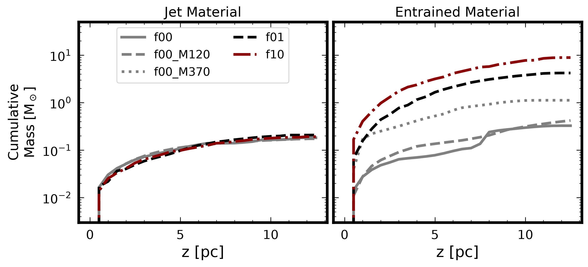
图注：在喷流达到约11—12 pc相近长度时，沿喷流轴位置z累计的喷流质量（左）和卷入质量（右）。f00、f01、f10、f00_M120、f00_M370对应时刻分别为57、73、85、73、85年。灰实线、灰虚线、灰点线、黑虚线及红点划线分别表示图例中的均匀主模型、两组等总质量均匀对照及两组云团模型；质量单位为太阳质量。
怎么看这张图：重点比较黑、红云团曲线与各自等质量均匀对照，分离气体总量和空间团块结构。卷入分量按速度与磁化筛选，不能直接等同于所有环境气体。
来源与置信度：arXiv HTML；source verified；https://arxiv.org/html/2610.01983v1/figures/Fig5-jet-mass-zj.png
9. Gaia neutron stars: demographics, birth rates, and connections to other neutron star populations
- 来源：arXiv / astro-ph.HE
- 链接：https://arxiv.org/abs/2610.00454
- 作者：Cheyanne Shariat, Natsuko Yamaguchi, Kareem El-Badry, Thomas J. Maccarone
- 公告 / 来源日期：2026-10-02
- 阅读层级：相关简报
- 评分：novelty 7/10，importance 8/10，relevance 7/10，final 8.35/10
- 推荐理由：27个Gaia中子星候选经选择函数校正估计内禀分布和诞生率，受样本纯度与选择模型限制。
中文题目：Gaia 宽轨道中子星候选的总体推断与选择偏差
问题、方法与结论：作者对27个Gaia DR3宽轨道中子星候选进行总体推断，向仿真观测流程注入约14万个双星，其中5727个通过天体测量与候选筛选。再用分层贝叶斯模型，将观测到的周期、质量和偏心率分布与实际被选中的概率联系起来。在采用的薄盘空间模型下，本地银河中面密度约每立方千秒差距120个，2 kpc内符合其定义的系统仅约3%已被当前样本找到。
意义与贡献：这把“看到的27个系统”与潜在总体明确区分，也说明一年附近的周期缺口可由视差与轨道解的退化造成。推断的Gaia DR4候选数约300—650个是依赖长周期分布外推的预测，不是已发现数，更不是所有银河中子星双星的普查结果。
可借鉴之处：可借鉴的是保留注入分布并做重要性重加权，再把推断总体重新通过同一选择函数，与观测样本作后验预测比较。模型较好复现一维分布，但周期与中子星候选质量的相关强于可分离总体模型预期，提示未来需要检验真实关联或未建模的选源过程。
局限与关注点：推断假设暗伴星都是中子星，超大质量白矮星污染仍可能存在；高质量子样本检查能测试敏感性，不能完全消除污染。异质的原始候选选择无法精确复现，测量参数相关和总体独立分布也作了简化。形成率还依赖寿命与银河空间外推，宜保留范围而非把单一中心值当精确率。
图1
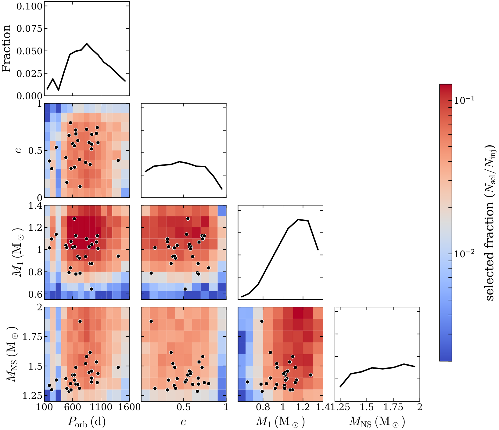
图注：Gaia DR3中子星候选系统的选择函数。对角线展示注入系统被选中的一维比例，下三角展示二维选择比例，黑圆叠加实际观测候选。候选大多处于高选择概率区，说明部分观测分布特征来自选择过程。坐标依次为轨道周期（日）、偏心率、可见星质量及暗伴星候选质量（太阳质量）。
怎么看这张图：先看颜色代表检测比例而非真实天体密度，再看观测点落在哪里。总体推断必须除去这类偏差，不能把周期附近的低完整度当成形成机制缺口。
来源与置信度：arXiv HTML；source verified；https://arxiv.org/html/2610.00454v1/fig01.png
10. Solarprop 2.0: Modern charge-sign dependent solar modulation for everyone
- 来源：arXiv / astro-ph.HE
- 链接：https://arxiv.org/abs/2610.01360
- 作者：Henning Gast
- 公告 / 来源日期：2026-10-02
- 阅读层级：相关简报
- 评分：novelty 7/10，importance 7/10，relevance 8/10，final 8.35/10
- 推荐理由：SOLARPROP2扩展输运维度和速度并揭示基准差异，可复用的宇宙线调制工具。
中文题目：Solarprop 2.0：太阳调制工具的升级与跨代码差异
问题、方法与结论：太阳风、扩散、漂移和绝热能损会改变进入日球层的宇宙线谱。Solarprop 2.0以随机微分方程求解粒子输运，新增包含纬向磁场的二维方案与另一组三维方案，并提供并行计算及Python接口。作者将输出与既有理论计算及公开调制模型比较，展示了计算加速，也发现部分参考算例的谱形或漂移效应仍有不能解释的差异。
意义与贡献：其实际贡献是让电荷符号相关的太阳调制模型更易使用和检验，而非已经给出一套无偏的宇宙线反演结果。模型间的不一致直接关系到从近地观测恢复局域星际谱时的系统误差，尤其对正反粒子比较以及时间变化研究重要。
可借鉴之处：可借鉴的是用多个历史基准分别检查扩散、漂移、电流片和边界星际谱，而不是只确认程序能运行。文中某些算例把漂移速度减半后更接近参考曲线，这只能作为定位差异的诊断，不应直接变成普适的经验修正。
局限与关注点：作者明确尚不能排除自身实现存在问题，也有参考星际谱和扩散归一化口径不清的情况。最高约千倍的加速取决于与旧实现的具体配置比较，不是任意任务的保证；真实数据的完整拟合仍属后续工作。使用者应先复现适合目标电荷与太阳活动状态的基准，再谈物理精度。
图9
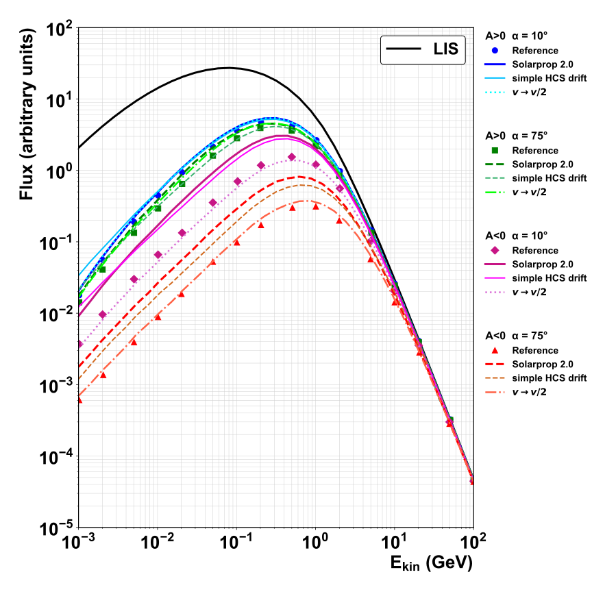
图注：Solarprop 2.0与从参考文献43图5数字化取得的结果比较，分别采用四种磁场极性A及日球电流片倾角α组合。“simple HCS drift”细线采用式18的简化电流片漂移处理，“v→v/2”曲线则将式17的漂移速度减半。横轴为动能GeV，纵轴为任意单位的流量；黑线为局域星际谱，彩色符号及线型区分参考结果与计算方案。
怎么看这张图：比较模型差异是否随磁极性和倾角改变。人为减半漂移速度是查找差异的诊断选项，不是已经验证的通用物理修正。
来源与置信度：arXiv HTML；source verified；https://arxiv.org/html/2610.01360v1/test_strauss_2012_fig5.svg
11. Early Emergence of SSS emission in RS Oph
- 来源：arXiv / astro-ph.HE
- 链接：https://arxiv.org/abs/2610.00762
- 作者：J.-U. Ness, J.P. Osborne, M. Orio, S. Starrfield, S. Mitrani, E. Behar
- 公告 / 来源日期：2026-10-02
- 阅读层级：相关简报
- 评分：novelty 7/10，importance 7/10，relevance 7/10，final 8.00/10
- 推荐理由：RSOph两次爆发高分辨软谱显示黑体误释风险；未识别谱线机制仍待建模。
中文题目：RS Oph 早期超软成分：低分辨率黑体拟合的陷阱
问题、方法与结论：作者重新比较复发新星RS Oph在2006和2021爆发早期的X射线资料，重点分析2021年爆发后37.1天的XMM-Newton光栅谱。作为直接对照，2006年第26.1天同时取得的低分辨率EPIC与高分辨率RGS数据揭示：低分辨率软峰能被黑体拟合，但同一模型折叠到光栅响应后无法描述复杂谱线。软峰的外观因此不足以确认白矮星超软连续谱已经直接显露。
意义与贡献：这影响对残余核燃烧开始显露时刻、温度与辐射尺度的解释。快速变化的软辐射与较慢的激波硬成分不同，支持存在额外软辐射过程；辐射复合连续谱及电荷交换等机制值得检验，但作者尚未完成唯一的定量谱线归属。
可借鉴之处：可借鉴的是使用真正同时的高低分辨率数据，并将同一源模型分别通过仪器响应，区分物理连续谱与混合谱线造成的光滑外观。再把不同时间段的光栅谱与光变对应，可检查哪些谱特征共同变化，而不必预先强制单温黑体解释。
局限与关注点：2021观测的pn采用burst模式、仅覆盖0.7 keV以上，不能代表整个超软谱；MOS未启用，RGS小窗模式还需特殊校准处理，部分产品无法常规扣背景。本文所选曝光未显著检出约35秒振荡，不能与其他时期的既有信号混为一谈。低温复合和电荷交换仍是候选解释。
图3
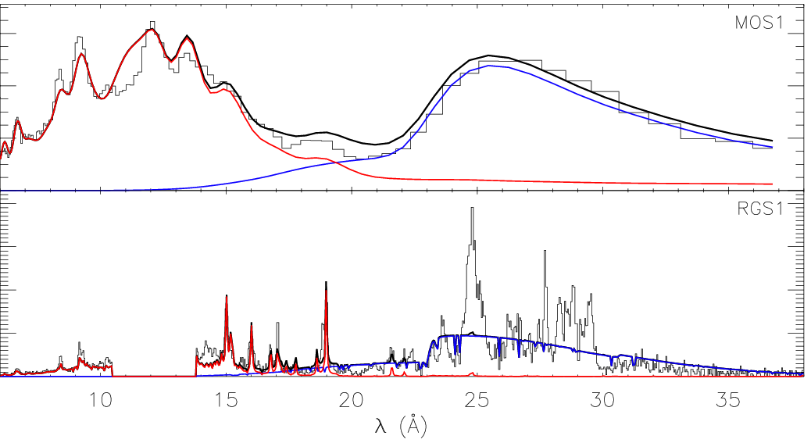
图注：RS Oph在2006年爆发后26.1天软增亮期间同时获得的EPIC/MOS1（上）与RGS1（下）波长谱。平滑黑线为碰撞电离APEC成分（红）加黑体（蓝）；黑体能较好拟合MOS1软峰，却不能描述RGS1。下图使用与上图相同的源模型，但经RGS1仪器响应折叠。横轴波长单位埃，纵轴为两仪器各自谱计数率密度。
怎么看这张图：这是同时数据的分辨率对照，先看低分辨率拟合成功，再看高分辨率下谱线结构如何打破黑体解释。不能仅凭平滑软峰确定超软连续谱的起始。
来源与置信度：arXiv HTML；source verified；https://arxiv.org/html/2610.00762v1/cmp_epic_rgs.png
12. Optimal Pulsar Timing Array Strategies with the Deep Synoptic Array
- 来源：arXiv / astro-ph.HE
- 链接：https://arxiv.org/abs/2610.00836
- 作者：Tyler Cohen, Paul B. Demorest, Jeremy G. Baier, Ryan S. Lynch, Scott M. Ransom, Michael T. Lam, Gabriella Agazie, Akash Anumarlapudi
- 公告 / 来源日期：2026-10-02
- 阅读层级：相关简报
- 评分：novelty 7/10，importance 7/10，relevance 7/10，final 8.00/10
- 推荐理由：PTA时间分配与仪器选择模拟，优化仅约5%增益，属实用资源约束非发现。
中文题目：DSA 脉冲星计时阵列：精细分配观测时间收益有限
问题、方法与结论：作者为85颗脉冲星建立通量、抖动、星际散射及本征红噪声模型，比较现有设施与深度巡天阵列DSA的计时方案，并对DSA可见的83颗优化固定总时间预算。假设从头进行15年、每月一次的理想观测，仪器组合升级可使引力波背景信噪比由约6.85升至14.44；而在DSA方案内部重新分配各源积分时间，只使等时方案的14.28提升至14.85。
意义与贡献：主要启示是区分仪器升级的收益与精细排程的边际收益。在引力波背景本身及本征红噪声主导的频率范围，单纯降低白噪声难以大幅提高总体信噪比；保留更多有用脉冲星及其空间交叉相关，可能比把时间集中给最亮源更重要。
可借鉴之处：方法把单源计时误差与整个阵列的科学目标连接起来，使用带时间上下界的优化，并以多起点、可行时间交换和100次噪声参数模拟检查结果。噪声大的脉冲星是否值得继续观测，取决于其对阵列的边际贡献，而不只看单个到达时刻误差。
局限与关注点：这些是等条件规划比较，不能预测真实NANOGrav历年更换仪器后的实际信噪比。红噪声、散射、固定谱形及引力波背景先验均影响结果；DSA子阵能力也不是已具备的前提。未来若目标改为单个连续引力波源或精确测量背景谱形，最优排程与采样频率都需重新求解。
图10
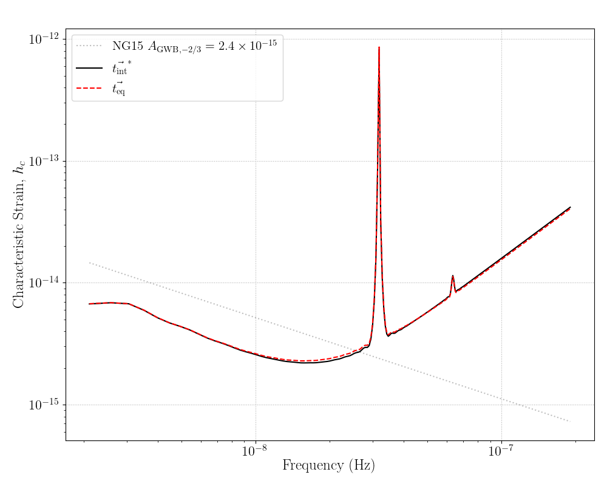
图注：采用DSA、观测15年的NANOGrav式脉冲星计时阵列的特征应变灵敏度曲线。黑实线为优化各源观测时间，红虚线为每历元各源等时；点线为采用NANOGrav十五年数据贝叶斯后验振幅的引力波背景幂律谱。横轴为引力波频率，纵轴为特征应变。
怎么看这张图：低频曲线接近重合说明此处不是白噪声限制；优化在中频略有收益，却可能牺牲高频灵敏度。背景总信噪比最优并不等于每个频率都最优。
来源与置信度：arXiv HTML；source verified；https://arxiv.org/html/2610.00836v1/optimal_time_vs_equal_time_hc_sencurves.png
13. Growth of aromatic hydrocarbon dust particles in the extremely metal-poor galaxy Sextans A
- 来源：Nature Astronomy
- 链接：https://www.nature.com/articles/s41550-026-02969-5
- 作者：Elizabeth J. Tarantino, Julia Roman-Duval, Karin M. Sandstrom, Cory M. Whitcomb, J.-D. T. Smith, Bruce T. Draine, Martha L. Boyer, Jérémy Chastenet
- 公告 / 来源日期：2026-09-29
- 阅读层级：相关简报
- 评分：novelty 7/10，importance 7/10，relevance 7/10，final 8.00/10
- 推荐理由：7%太阳金属丰度星系中的三波段PAH团块提供颗粒生长约束；官方全文已核，宽带比值与模型仍有退化。
中文题目：极低金属丰度星系Sextans A中的芳香烃尘埃团块
问题、方法与结论：Nature Astronomy于9月29日发表的研究利用JWST对Sextans A最亮恒星形成区的深度成像，在仅约太阳7%金属丰度的环境中同时检测3.3、7.7和11.3微米多环芳香烃辐射。三个波段均达到检测要求的团块直径约3—10 pc，许多接近分辨极限；其7.7微米辐射相对偏弱，现有尘埃模型难以同时解释所有波段比值。
意义与贡献：结果表明，金属贫乏并不意味着完全不存在这类复杂碳质分子。团块与较小、较中性的颗粒分布相容，作者倾向于认为受抑制的颗粒生长及致密区屏蔽共同控制丰度，而不是仅由强紫外辐射摧毁颗粒。这是有观测支持的解释，尚非对颗粒原位生长过程的直接追踪。
可借鉴之处：可借鉴的是先用相邻滤光片估计连续谱，再要求多个特征共同出现，并将同样的合成测光流程用于猎户座参考光谱。这样能检查异常波段比值是否由方法造成；同时需把滤光片内的通量密度换算为谱带积分通量，避免带宽与谱形造成倍数偏差。
局限与关注点：宽带测光仍有相邻谱带污染，3.3微米连续谱扣除存在约20%的不确定性；大孔径总红外比较又受波束稀释影响。辐射场、粒径和电离状态高度退化，两套模型均难复现偏弱的7.7微米特征，不能把单个最佳谱当唯一粒径诊断。后续红外光谱将检验这些解释。
图2
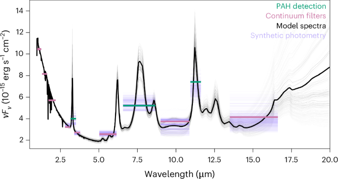
图注：Sextans A最亮芳香烃团块1的频率加权通量密度νFν。品红与绿色水平线表示测量，其中绿色为F335M、F770W和F1130W特征带；横线宽度为滤光片透过率超过峰值一半的波长范围，误差条小于竖线粗细。灰谱为PHOENIX恒星与D21尘埃模型的组合，透明度按χ²缩放，黑线为平均谱；不同辐射场、气柱密度、颗粒大小和电荷分布可产生退化的测光拟合。紫色横线为模型合成测光。横轴为波长微米，纵轴νFν单位为10⁻¹⁵ erg s⁻¹ cm⁻²。
怎么看这张图：先比较绿色特征带与品红连续谱，再看灰色模型的分散范围。多个模型在测光点附近相容不意味着完整谱形或颗粒性质唯一确定，尤其7.7微米仍难解释。 显示三特征带检测及宽带测光的物理退化。
来源与置信度：Nature Astronomy official HTML；source verified；https://media.springernature.com/lw685/springer-static/image/art%3A10.1038%2Fs41550-026-02969-5/MediaObjects/41550_2026_2969_Fig2_HTML.png
说明
评分由 LLM 给出初评，再由本地阈值策略过滤；IACT、TeV 伽马射线和高能中微子天文学按重点方向处理。